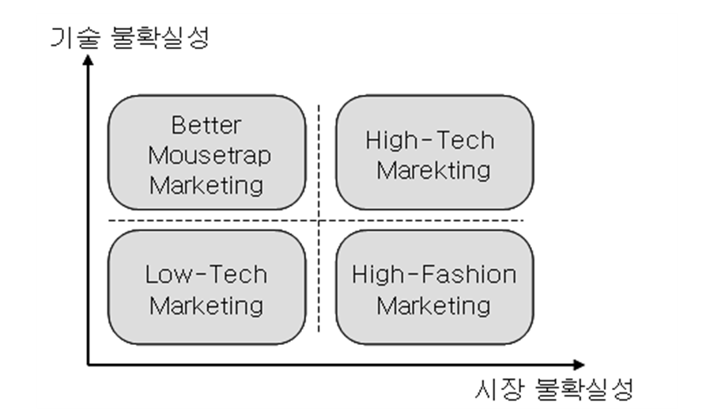
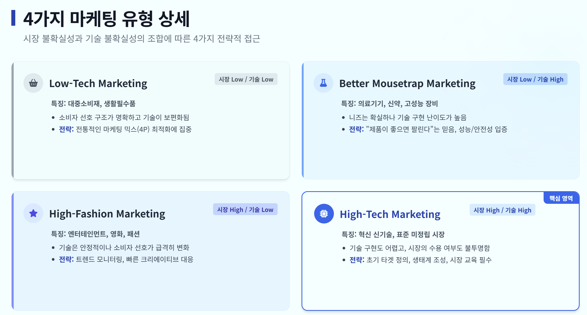
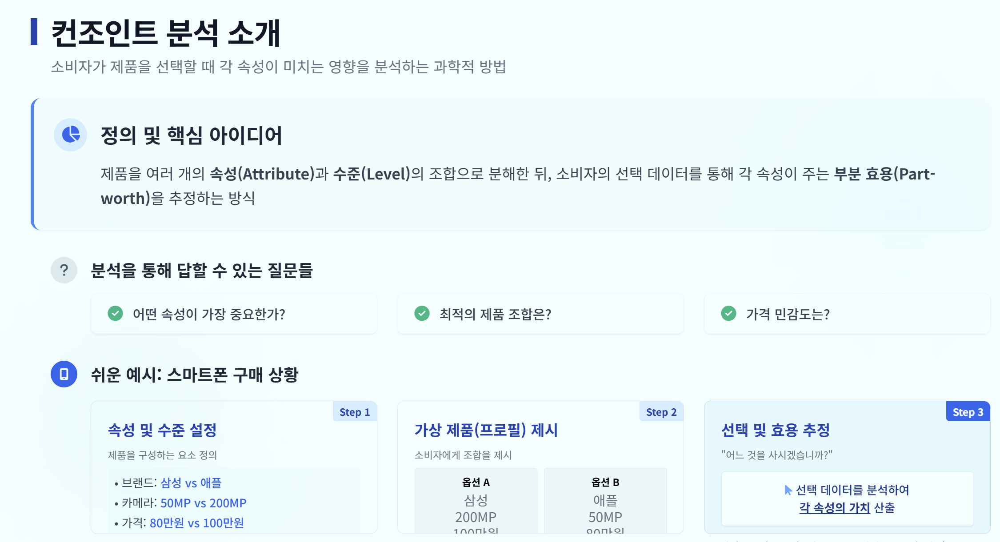
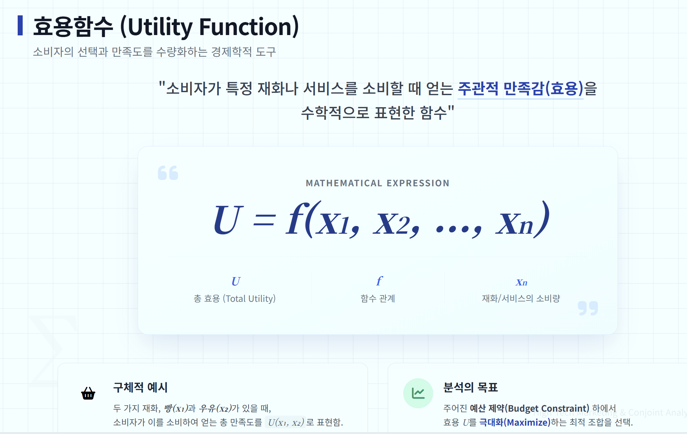
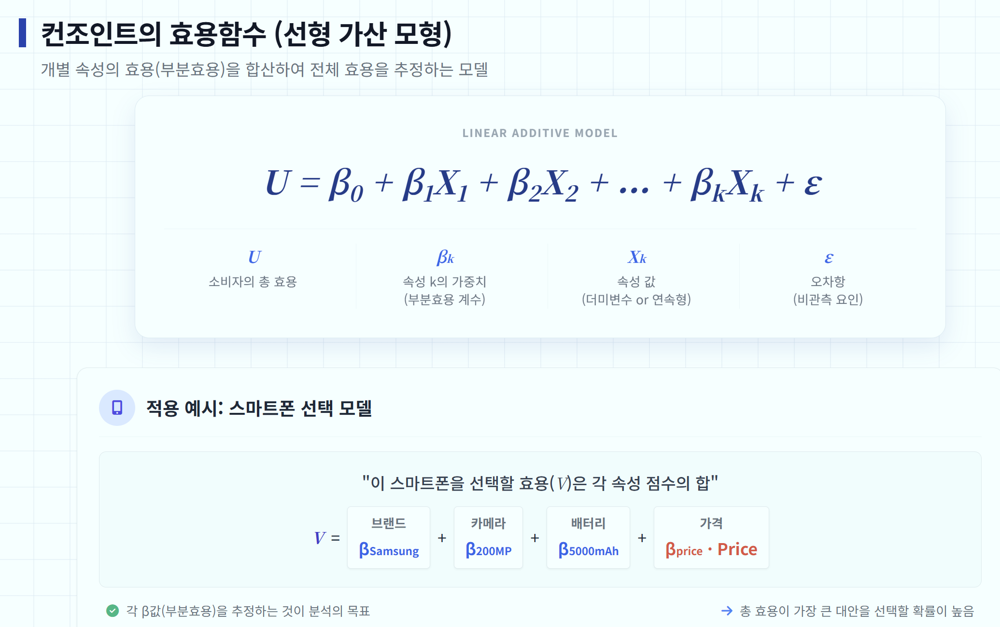
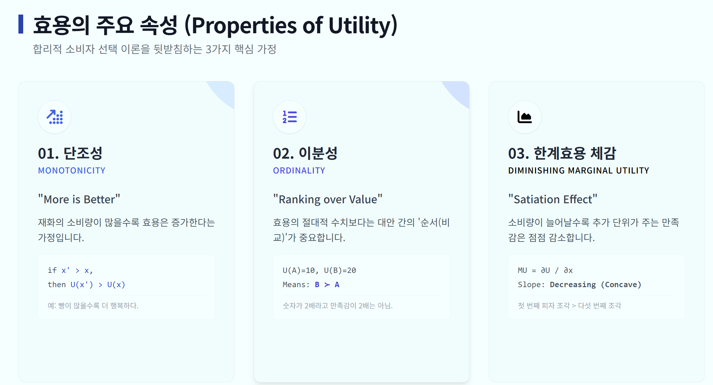
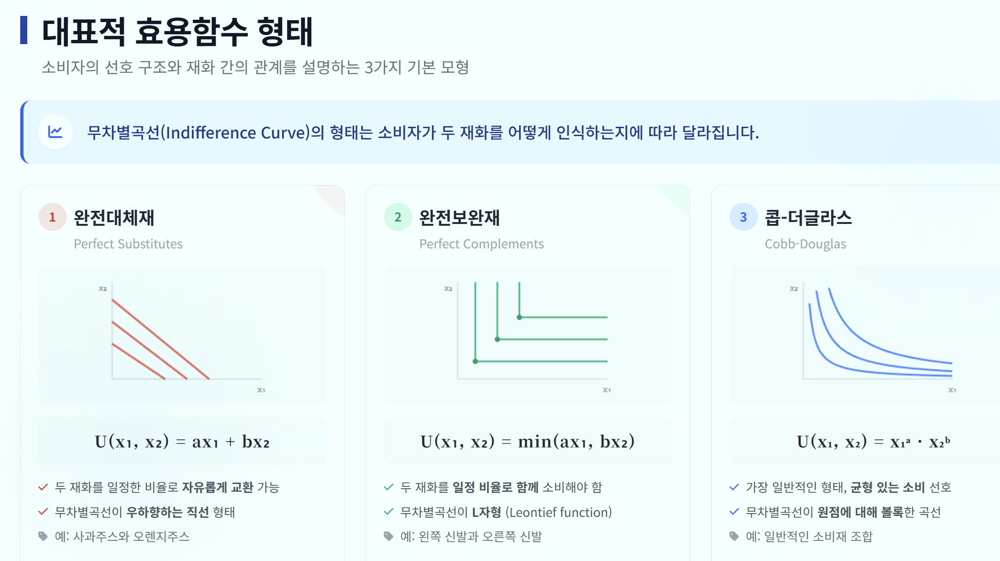

Conjoint 분석 방법
Pre-class video
- Conjoint Analysis (2) for IMUX
하이테크 시장의 특징
1. 하이테크 상품의 정의
하이테크 상품의 정의에 대한 합의 부족
전문가들 사이에서 명확한 기준이 없음
일반적으로 첨단기술을 활용한 제품으로 정의됨
그러나 대부분의 신상품이 새로운 기술을 포함하므로 범위가 과도하게 넓어질 수 있음
미국 노동통계청(BLS)의 정의
평균 연구개발비 지출이 미국 전체 기업 평균의 두 배 이상
평균 기술직 고용 인력이 두 배 이상인 기업을 하이테크 기업으로 분류
Regis McKenna의 정의
- 제품의 복잡성, 급격한 변화, 혼동스러운 소비자, 다수의 기업가적 경쟁자가 있는 기업
산업별 정의
- IT, BT, NT, CT, ST 등 5가지 첨단산업과 관련된 상품
김상훈(2004)의 정의
- “급격한 기술변화와 상당한 시장 불확실성에 노출된 상품”
하이테크 상품의 특징
시장이 성숙하여 수요가 안정된 경우 하이테크 상품으로 보기 어려움
기술적 혁신성이 크고 시장의 불확실성이 높다면 하이테크 상품에 해당
하이테크 마케팅의 중요성
- 높은 시장 불확실성으로 인해 마케팅이 핵심 요소
주요 이슈
신상품을 소비자의 요구에 맞게 설계하는 방법
소비자가 제품을 구매하도록 유도하는 방법
시장을 성공적으로 창출하고 확산하는 방법
2. 하이테크 마케팅
하이테크 산업의 특징
시장 불확실성이 높은 산업군
통신
컴퓨터 하드웨어/소프트웨어
디지털 가전
인터넷 콘텐츠 및 e-비즈니스
바이오 산업 등
하이테크 마케팅의 개념
하이테크 상품을 대상으로 하는 마케팅
전통적 마케팅과 다른 방식의 접근 필요
가. 시장 불확실성 및 기술 불확실성
- 시장 불확실성 (Moriarty & Kosnik, 1989)
소비자 욕구 파악의 어려움
- 새로운 시장에서 소비자 선호 구조를 예측하기 어려움
소비자 니즈 변화
- 예: 휴대전화의 초기에는 통화 품질이 중요했으나, 이후 휴대성과 기능성이 중요한 요소로 변화
산업 표준의 부재
제품 출시 시 관련 산업 표준이 미정일 가능성이 큼
예: 특정 메모리 형식(SD vs. T-Flash)의 표준화가 산업 경쟁력을 결정
혁신 확산의 속도 예측 불가능
- 신제품이 얼마나 빠르게 시장을 창출할지 예측하기 어려움
잠재 시장 규모의 예측 난항
신제품의 경우 비슷한 기존 제품이 없어 시장 규모 예측이 어려움
예: DMB 기능이 있는 휴대전화가 이동통신 시장과 방송 시장 중 어디에 속하는지 모호
- 기술 불확실성 (Moriarty & Kosnik, 1989)
제품 성능 불확실성
- 제품이 소비자 기대 수준에 부합하는지 확인이 필요
제품 부작용 가능성
- 예: 온라인 결제 시스템의 보안 문제, 의약품의 예상치 못한 부작용
중간재와의 호환성 문제
- 예: 온라인 게임의 고품질 그래픽이 네트워크 성능에 의해 제한될 수 있음
제품 개발 및 출시 시기 불확실성
- 출시 지연 시 경제적 손실 및 신용 타격 가능성
기술 진부화 위험
- 기술 발전이 빠른 산업에서는 기존 기술이 빠르게 대체될 가능성 큼
나. 마케팅 유형의 구분
Moriarty & Kosnik (1989)의 분류 기준
- 시장 불확실성과 기술 불확실성의 조합에 따라 네 가지 마케팅 유형으로 구분

다. 마케팅 유형의 구분
1. Low-Tech Marketing
기술 및 시장 불확실성이 모두 낮은 경우
특징
기존 시장의 규모가 크고 소비자 선호 구조가 비교적 명확
사용되는 기술이 보편화되어 개발 및 생산의 기술적 난이도가 낮음
예시
- 생활필수품 및 일반 소비재
마케팅 전략
- 전통적인 마케팅 방식으로 충분
2. High-Fashion Marketing
시장 불확실성이 높지만 기술 불확실성은 낮은 경우
특징
소비자 선호가 빠르게 변화
기존 시장은 존재하지만 변동성이 큼
예시
- 영화, 스포츠, 엔터테인먼트 산업
마케팅 전략
- 소비자 선호의 변화 파악이 핵심
- 소비자 선호의 변화 파악이 핵심
3. Better Mousetrap Marketing
기술 불확실성이 높지만 시장 불확실성은 낮은 경우
“제품이 더 좋으면 자연스럽게 팔린다”는 믿음에 기반한 마케팅 사고방식
특징
소비자 니즈가 비교적 확실
제품 개발에 높은 기술 수준 요구
예시
- 암 치료제, 고성능 의료기기
마케팅 전략
기능의 우수성 강조
부작용에 대한 소비자의 우려 해소
4. High-Tech Marketing
기술 및 시장 불확실성이 모두 높은 경우
특징
기술 개발 및 제품 생산에 높은 수준의 기술력 필요
소비자 선호 및 니즈가 불명확하여 기존 마케팅 전략과 차별화 필요
마케팅 전략
- 기존의 전통적인 마케팅 방식과 다른 접근 필요

라. 하이테크 마케팅의 특징
1. 소비자 선호의 이질성 (Heterogeneity)
하이테크 제품은 소비자별로 인식 및 필요성의 차이가 큼
필수품이 아닌 경우가 많아 소비자마다 제품 가치를 다르게 평가
기술수용모형에서 나타난 혁신자(early adopters)와 대중(consumers) 간의 차이 발생
2. 동적(Dynamic) 마케팅 전략 필요
시장 초기 목표 고객 선정 후, 성장 단계에서 소비자 변화 대응 필수
전략 요소
초기 시장 선점
빠른 제품 출시
적절한 타이밍의 시장 전략 결정
3. 기술 및 마케팅 부서 간 협업 필수
효과적인 하이테크 마케팅을 위해 기술 개발팀과 마케팅팀의 원활한 협력 필요
기술 지식이 없는 마케팅팀은 효과적인 전략 수립이 어려움
4. 시장 동향 및 소비자 니즈 예측의 중요성
능동적이고 미래지향적인 접근 필수
- 현재 소비자 요구만 분석하면 미래 시장 변화 대응이 어려움
잠재적 니즈 발굴의 어려움
- 기존 제품 개선보다는 혁신 제품이 많아 시장 조사 자체가 어려운 경우 발생
5. 하이테크 기업이 직면하는 장애물
조직 내부의 경직성 및 정보 공유 부족
고객의 현재 의견에만 의존하면 혁신적 신제품 개발 지연
시장 조사만으로 소비자의 미래 선호 예측이 어려움
마. 하이테크 마케팅의 핵심
하이테크 제품 마케팅은 기존 소비재 마케팅과 달리 시장 변화 관찰 및 미래 소비자 니즈 예측이 필수
잠재적 선호 분석이 필요

컨조인트 분석(conjoint analysis)은 여러 속성(attribute)과 수준(level)으로 정의되는 대안(제품/서비스/정책안)에 대해 응답자가 보여주는 총체적 평가(평점·순위·선택)를 관측한 뒤, 그 평가를 설명하는 속성 수준별 효용(파트워스, part-worth)을 추정하여 “무엇이 선택을 좌우하는가”를 정량화하는 분해적(decompositional) 선호 측정 방법군을 의미한다. 1990년 Green & Srinivasan의 고전적 정의에 따르면, 컨조인트는 “미리 속성수준으로 규정된 대안들에 대한 전반적 평가로부터 선호 파라미터(파트워스, 중요도 등)를 추정하는 모든 분해적 방법”으로 정리된다.
현대 실무에서 표준에 가까운 형태는 선택기반 컨조인트(CBC; choice-based conjoint)로, 응답자에게 여러 번의 선택과제(choice task)를 제시해 실제 시장의 선택 상황을 모사하고, 랜덤효용이론(Random Utility Theory)과 이산선택모형(특히 로짓 계열)에 기반해 추정한다. 한국 정책연구 맥락에서도 CBC는 “시장 선택과정을 유사하게 재현”하여 선호를 파악하는 방법으로 소개되며, 속성·수준의 선정과 독립성(공선성 최소화) 고려를 강조한다.
설계·추정의 기술 선택에서 핵심은 (1) 실험설계의 정보량(orthogonal vs. D-efficient, priors 포함), (2) 이질성(heterogeneity) 처리 수준(HB/혼합로짓/잠재계층), (3) 편향(가상편향·속성무시·스케일 이질성·앵커링) 통제다. 특히 효율적(choice-efficient) 설계를 위해 Huber & Zwerina가 제시한 직교성·수준균형·최소중복·효용균형 원리 및 D-error 기준이 널리 인용되며, 비선형 선택모형 설계는 ’사전(anticipated) 파라미터’가 필요함을 명시한다.
데이터 수집이 온라인 패널로 이동하면서 품질관리(주의도·정직성·스피딩·트랩문항 등)가 중요해졌음.
최신 흐름은 (a) 개별응답자 수준 추정을 표준화한 계층적 베이즈(HB)의 확산(상용 툴도 개인 수준 유틸리티 산출에 HB를 채택), (b) 적응형 설계(ACBC/베이즈 적응 설계/폴리헤드럴·액티브러닝), (c) 딥러닝·머신러닝과 RUM의 결합(RUM-net류)로 요약할 수 있다.




수학·통계적 기반
컨조인트 분석의 “수학적 본체”는 (i) 효용모형(utility model), (ii) 파트워스(part-worth) 추정과 식별(identification), (iii) 오차 구조와 스케일(scale), (iv) 설계행렬(coding/design matrix)로 요약된다. CBC/DCE는 특히 이산선택모형(discrete choice model)과 직결되므로 랜덤효용이론을 중심으로 정리
랜덤효용이론과 로짓 계열
가장 일반적인 출발점은 다음 분해다.
\[ U_{nit} = V_{nit} + \varepsilon_{nit}, \quad V_{nit} = x_{nit}^\top \beta_n \]
\(U_{nit}\): 개인 (n)이 과제 (t)에서 대안 (i)에 부여하는 총효용
\(V_{nit}\): 관측 가능한 체계적 효용(대표효용)
\(\varepsilon_{nit}\): 관측 불가능한 오차(확률적 부분)
속성(Attribute)과 수준(Level)
콘조인트 분석을 하려면 먼저 제품을 ’레고 블록’처럼 쪼개야 합니다.
속성 (Attribute): 제품을 구성하는 큰 특징이나 카테고리입니다.
- 예시: 브랜드, 가격, 색상, 배터리 용량
수준 (Level): 각 속성 안에 들어가는 구체적인 옵션입니다.
예시: * [브랜드] 속성의 수준: 삼성, 애플, 구글
[가격] 속성의 수준: 80만 원, 100만 원, 120만 원
[색상] 속성의 수준: 블랙, 화이트
💡 핵심 요약: 모든 제품은 [속성]과 [수준]의 조합으로 이루어져 있음. (예: 삼성 + 100만 원 + 블랙)
파트워스(부분가치)와 식별 문제
파트워스는 “속성 수준이 총효용에 기여하는 가산적(또는 준가산적) 구성 요소”로 이해할 수 있다. 전통적 풀-프로파일에서는 프로파일 평점(또는 순위)을 종속변수로 두고 다중회귀(OLS 등)로 수준 더미 변수의 계수를 추정해 파트워스를 얻는 방식이 널리 사용되었다.
사람들은 각 ’수준(Level)’마다 마음속으로 점수를 부여합니다.
애플 = +50점, 삼성 = +40점
80만 원 = +100점, 120만 원 = -20점 이러한 개별 조각의 점수를 **부분 가치(Part-worth)**라고 합니다.
전체 효용 계산 (Total Utility)
특정 스마트폰의 총 만족도는 각 조각(부분 가치)의 합입니다.
스마트폰 A (애플, 80만 원): 50점 + 100점 = 150점
스마트폰 B (삼성, 120만 원): 40점 + (-20점) = 20점. 이때 당연히 150점짜리 스마트폰 A를 선택
로짓 모델
로짓(MNL/conditional logit)은 \(\varepsilon\)가 i.i.d. type-I extreme value(Gumbel)라는 가정에서 선택확률이 닫힌형(closed-form)으로 나온다.
\[ P_{nit} = \frac{\exp(V_{nit})}{\sum_{j \in C_t} \exp(V_{njt})} \]
효용 점수가 150점, 20점이라고 해서 “150%의 확률로 산다”는 뜻은 아닙니다. 이 추상적인 점수를 ’구매 확률(0~100%)’로 예쁘게 바꿔주는 수학적 변환기가 필요한데, 가장 대표적으로 쓰이는 것이 다항 로짓 모델(Multinomial Logit Model)입니다. (점수가 높을수록 선택될 확률이 기하급수적으로 높아지도록 계산해 주는 필터라고 생각하면 됨)
추정 (Estimation): 마음속 점수는 어떻게 알아낼까?
소비자 머릿속에 들어갈 수는 없으니, 우리는 설문조사를 통해 이 점수(\(\beta\))를 역추적(추정)해야 합니다.
실험 설계: 사람들에게 가상의 제품 조합을 보여줍니다.
- “A(애플, 120만원, 블랙) 살래? B(삼성, 80만원, 화이트) 살래?”
데이터 수집: 사람들이 수십 번의 선택을 반복합니다. (이를 선택기반 콘조인트, CBC라고 합니다.)
컴퓨터의 역추적 (추정 로직):
- “이 사람이 A대신 B를 계속 고르는 걸 보니, 이 사람은 ’브랜드’보다 ’가격’을 훨씬 중요하게 생각하는구나! 80만 원의 부분 가치를 높게 주자.”
계산 방법 (HB, Hierarchical Bayes):
- 요즘 가장 많이 쓰는 추정 방식은 계층적 베이즈(HB). 쉽게 말해, “전체 사람들의 평균적인 성향”을 바탕으로 시작해서, “개인별 선택 데이터”를 학습하며 한 명 한 명의 맞춤형 부분 가치(점수표)를 정밀하게 깎아나가는 AI 같은 알고리즘.
사후 분석 (Post Calculation): 이 데이터로 무엇을 할 수 있을까?
가장 흥미로운 부분. 사람들의 ’마음속 점수표(부분 가치)’를 모두 구했다면, 이제 강력한 비즈니스 시뮬레이션을 할 수 있습니다.
① 속성 중요도 (Relative Importance)
어떤 속성이 소비자의 선택에 가장 큰 영향을 미치는지 100% 만점으로 환산합니다.
계산법: 각 속성별 (최고 수준의 점수 - 최저 수준의 점수)의 격차를 구합니다. 격차가 클수록 소비자가 민감하게 반응한다는 뜻입니다.
결과 예시: 가격 중요도 50%, 브랜드 중요도 30%, 색상 중요도 20%
② 시장 점유율 시뮬레이션 (Market Share Simulation)
경쟁사 제품과 우리 제품을 가상의 시장에 올려놓고 점유율을 예측합니다.
“경쟁사가 100만 원짜리 신제품을 냈을 때, 우리가 90만 원으로 가격을 내리면 시장 점유율이 몇 % 나 오를까?”
각 개인의 가치 점수표를 바탕으로 어떤 제품을 선택할지 확률을 계산한 뒤 총합을 구합니다. (What-if 분석)
③ 지불 용의액 (WTP: Willingness to Pay)
특정 기능을 넣었을 때 소비자가 돈을 얼마나 더 낼 의향이 있는지 계산합니다.
계산법: ’가치 점수’를 ’가격 점수’로 나눕니다.
예시: 카메라 화소를 업그레이드했을 때 효용이 +10점 오릅니다. 그런데 가격이 1만 원 오를 때마다 효용이 -1점 깎입니다. 그렇다면 10점의 효용은 곧 10만 원의 가치와 같습니다. 즉, “소비자는 카메라 업그레이드에 10만 원까지 더 지불할 용의가 있다”고 해석합니다.
콘조인트 분석은 1) 제품을 속성과 수준으로 쪼개고, 2) 사람들에게 선택 게임을 시켜서, 3) 각 옵션의 숨겨진 가치(점수)를 수학적으로 추정한 뒤, 4) 최적의 제품 스펙과 가격을 찾아내는 매우 과학적인 의사결정 도구.